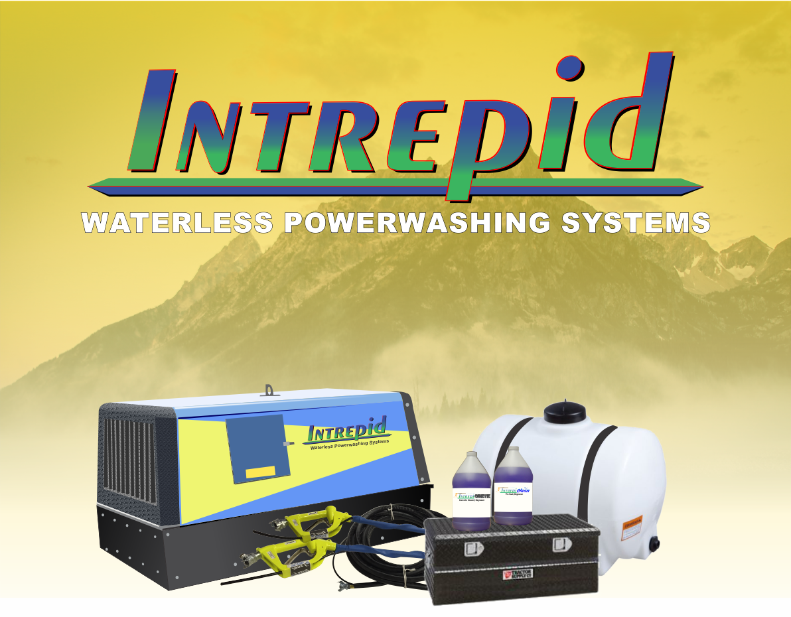
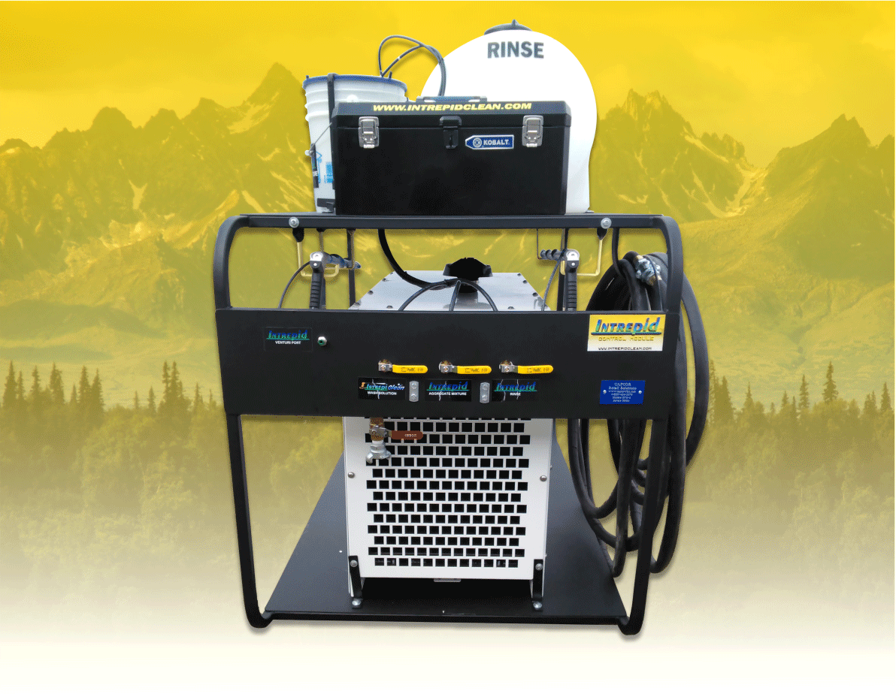
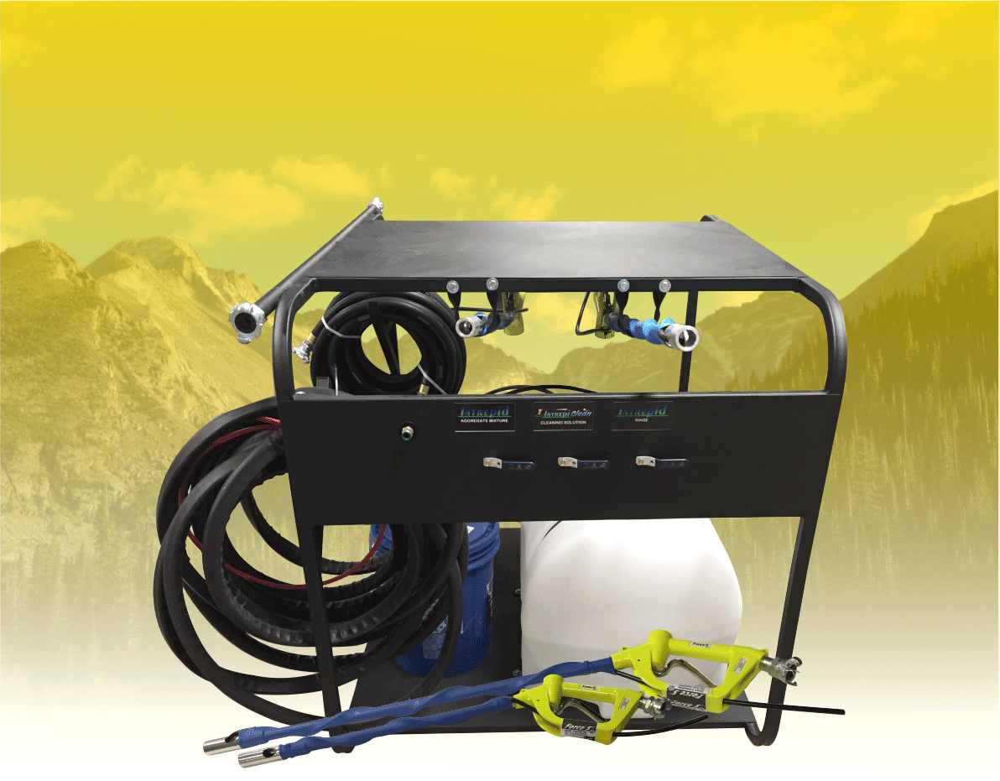
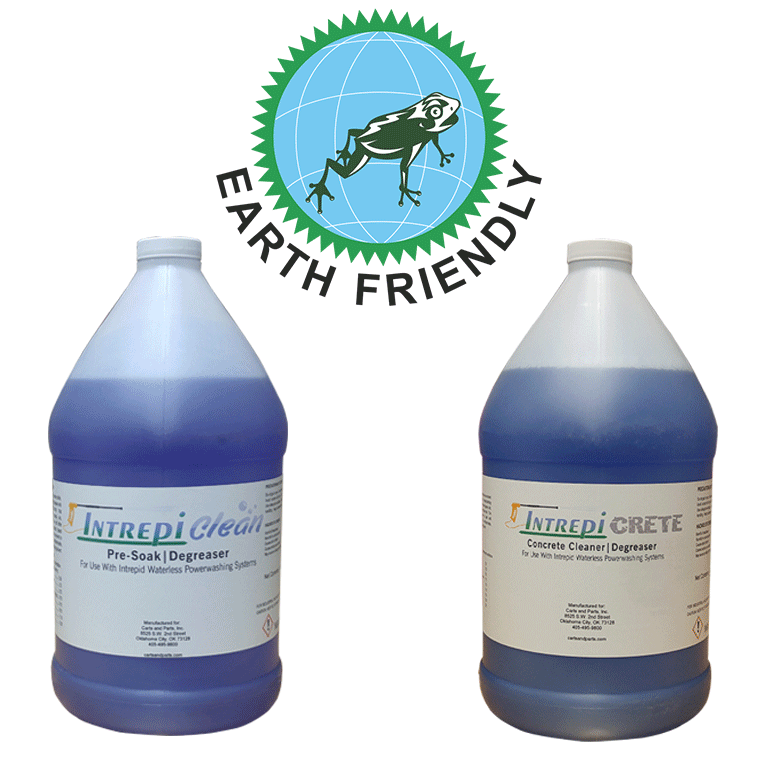

Intrepid I

The Intrepid I Waterless Powerwashing System is the perfect solution to regular power
washers
that use large amounts of water. When most pressure washing systems use between 5 and 8 gallons of
water per minute, the Intrepid I unit uses between 1 and 30 gallons of water per hour. Download brochure with full specs.
Intrepid II

The Intrepid II Waterless Powerwashing System offers the same great cleaning power as
our Intrepid I unit, but is smaller and more compact for easy transport. The Intrepid II uses between 1
and 20 gallons of water per hour.
Just like Intrepid I, our Intrepid II unit eliminates the need to reclaim or filter any wastewater.
Skid Mounts

With our skid mount setups you can turn your own air compressor into an Intrepid
waterless powerwashing machine. Skid mount setups are built to handle large 185 cfm compressors, but can
also run off smaller units.
Earth Friendly Detergents

The environment is our top concern. We offer a line of powerful detergents and
degreasers that are safe for the environment. Our detergents can be used with our Intrepid units or as
stand alone pretreatments.
Previous
Next